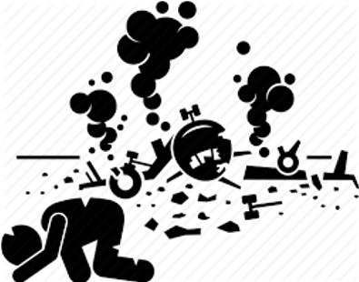

Introduction
Our project looks at airplane crashes and fatalities since 1908. We envisioned the user of this dataset as someone planning a trip who wants to make informed decisions about their potential safety, with their questions falling into four main categories: Where have the most crashes happened? When do the most crashes happen? What are the most common causes of accidents? And finally, if I'm in a crash, how likely am I to survive?

